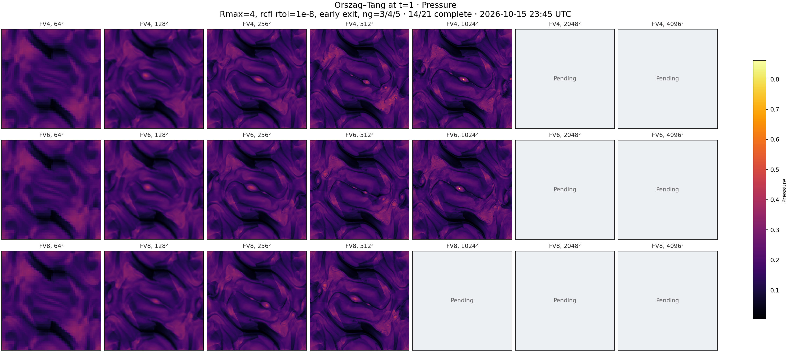
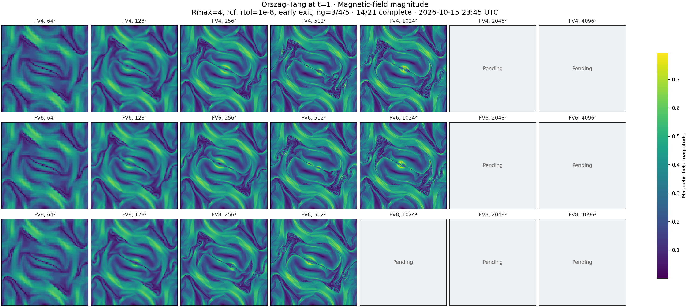
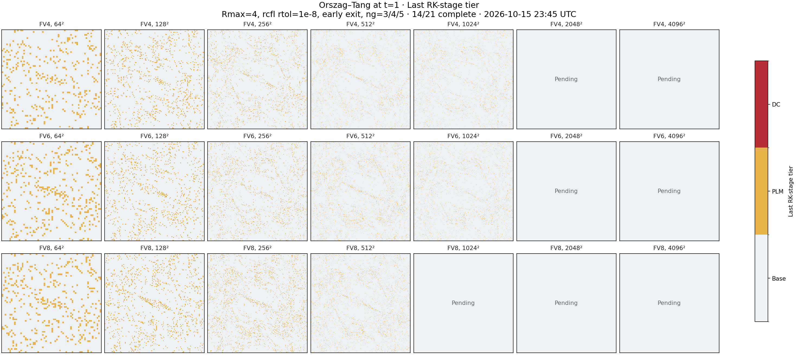
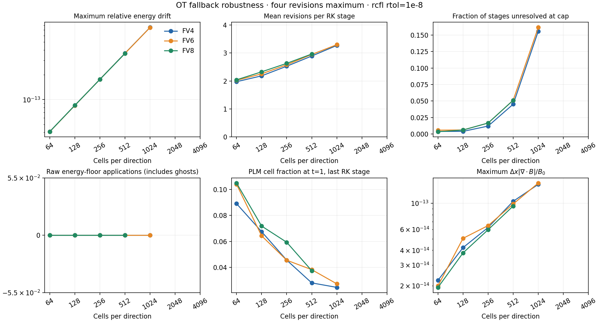

2026-10-15 23:45 UTC · 14/21 recorded · 14 without EOS repairs
Four revisions maximum; rcfl rtol=1e-8; early termination; 3/4/5 ghosts. Red titles indicate repairs or incomplete cases. Grey panels are pending. Raw EOS counters include ghost cells. Fallback maps show the last RK stage.



